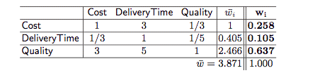
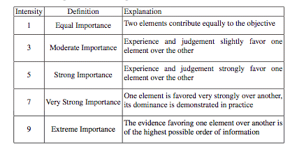
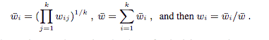
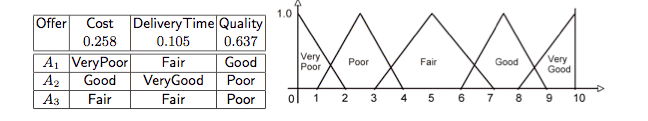
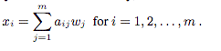

Selecting Best Offer
Assume that we have to chose among offers A1, A2, A3 that have been evaluated according to their Cost, Delivery Time and Quality. These are our selection criteria. An expert has assessed a judgement table relative to the importance of the three criteria (i.e., using pairwise comparison as for the Analytic Hierarchy Process) as follows (we indicate also the computed criteria weight wi):

A column value wij corresponds to relative importance of criteria Ai against criteria Aj, according the following table (for ease, we set wji = 1/wij)

The final weight of the criteria is then computed by the formula:

Hence, the weights of the criteria Cost, DeliveryTime and Quality are, 0.258, 0.105 and 0.637, respectively.
Now, the offers have also been evaluated by the expert, which provided a qualitative judgment aij of the performance using triangular fuzzy numbers: i.e., the decision matrix is

For instance, offer A1 evaluates as very poor according to the cost criteria.
The score of an offer is obtained as the weighted sum of the performance weights for each criteria:

As each aij is a fuzzy number, the score xi of alternative Ai is a fuzzy number as well. To get a final score, which is a scalar, we defuzzyfy xi using MOM and rank the offers in decreasing order with respect to the final score.
The encoding in fuzzyDL is as follows:
1. We define attributes that correspond to the criteria
(define-concrete-feature hasCost *real* 0 100)
(define-concrete-feature hasDeliveryTime *real* 0 100)
(define-concrete-feature hasQuality *real* 0 100)
2. We define an attribute for the final score
(define-concrete-feature hasScore *real* 0 100)
3. We define the concept
(define-concept Aletrnative (= hasScore ( (0.258*hasCost) + (0.105*hasDeliveryTime) + (0.637*hasQuality) ) ))
It says that the score of each alternative is the linear combination of the performance of the criteria, weighted by the criteria weight.
4. We describe the three offers as three concept instances, according to the decision matrix:
(instance a1 (and Aletrnative (some hasCost VeryPoor) (some hasDeliveryTime Fair) (some hasQuality Good) ))
(instance a2 (and Aletrnative (some hasCost Good) (some hasDeliveryTime VeryGood) (some hasQuality Poor) ))
(instance a3 (and Aletrnative (some hasCost Fair) (some hasDeliveryTime Fair) (some hasQuality Poor) ))
5. Eventually, we use defuzzyfication to compute the final score (the value after the comment mark % will be the result):
(defuzzify-mom? Aletrnative a1 hasScore) % 5.3025
%(defuzzify-mom? Aletrnative a2 hasScore) % 4.5775
%(defuzzify-mom? Aletrnative a3 hasScore) % 3.4075
Hence, the ranking of the offers is A1 > A2 > A3.
The example implementing this case can be found here.